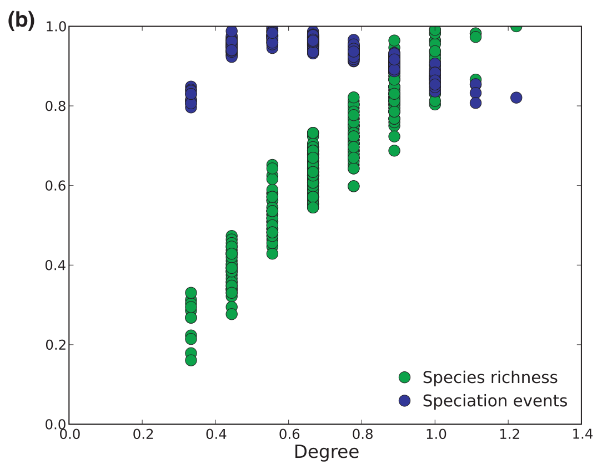
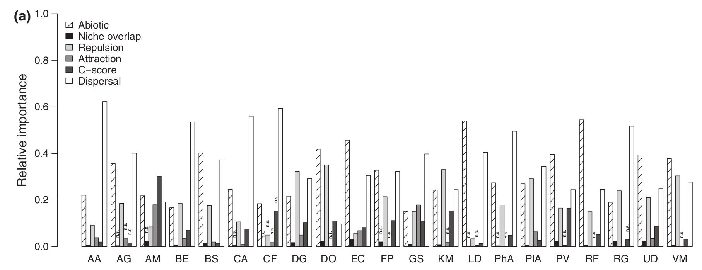
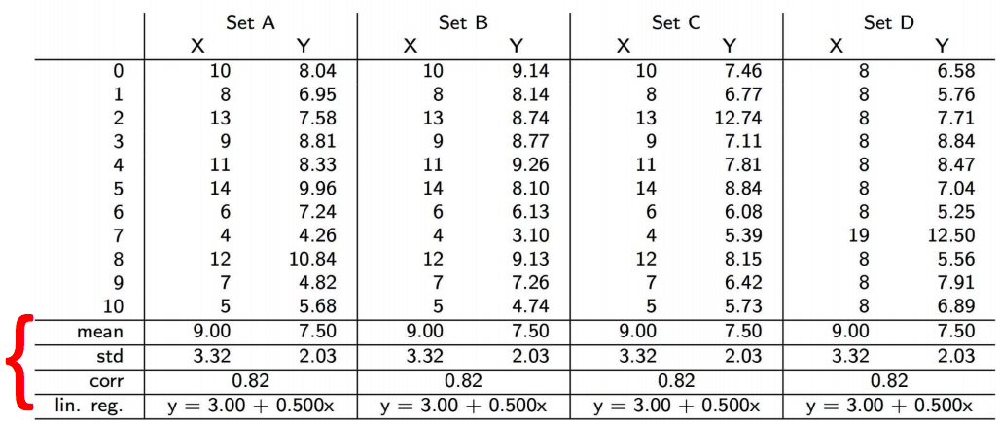
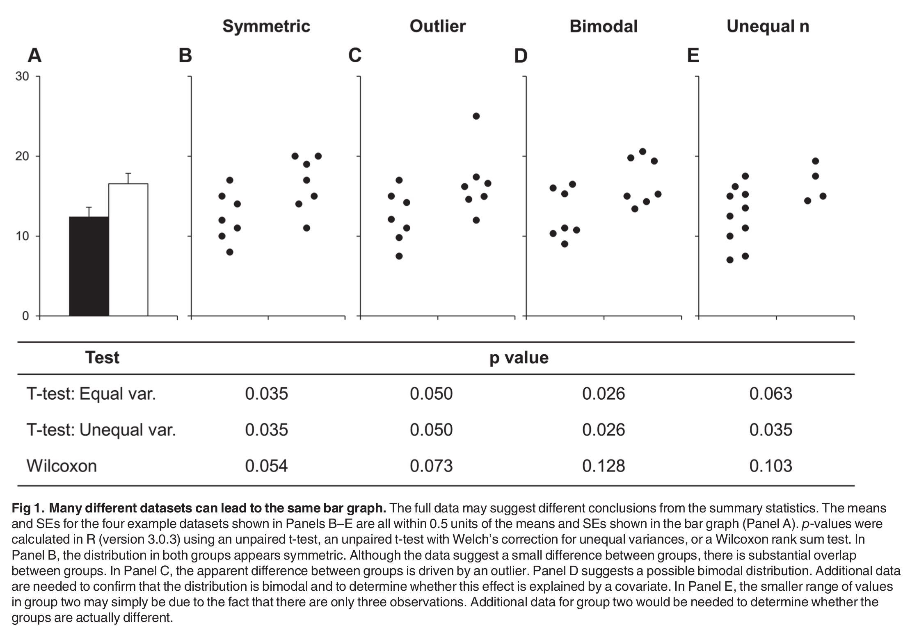
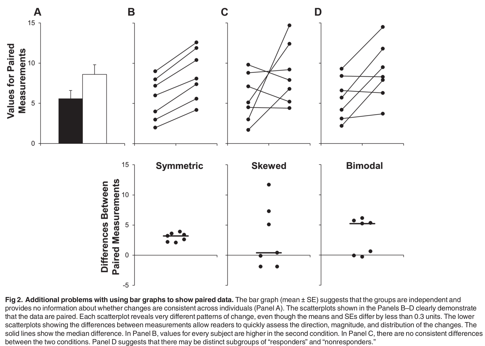
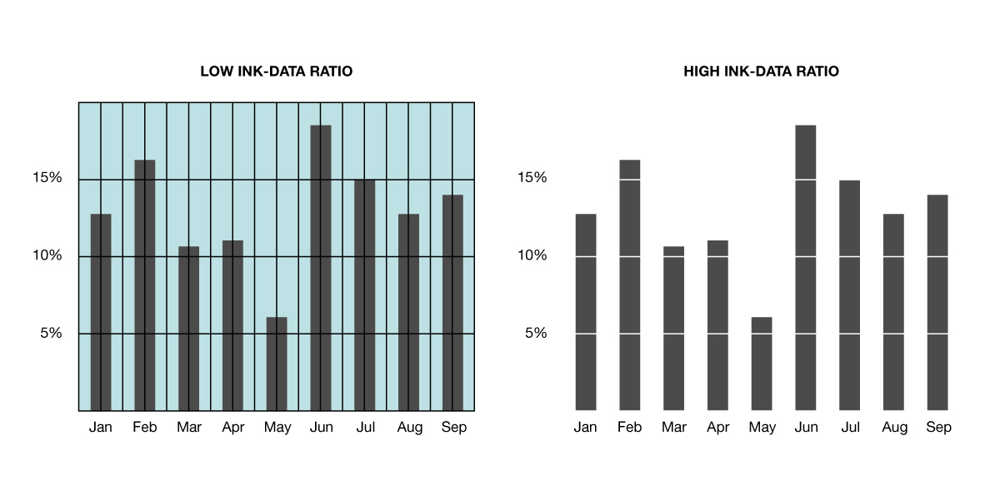

- Ces diapositives sont disponibles en version web et en PDF.
- L'ensemble du matériel de cours est disponible sur la page du portail moodle.
- Vous trouverez du matériel supplémentaire dans le cours de Kevin Cazelles et Nicolas Casajus lors d'un atelier de communication visuelle du CSBQ.
- Certaines diapositives sont également extraites de la présentation de David Taylor
Séance 6: La visualisation des données
BIO 500 - Méthodes en écologie computationnelle
Dominique Gravel & Steve Vissault
Laboratoire d'écologie intégrative
Séance 6
Qu'est-ce qui fait une bonne figure ?
Trop d'information

Non respect des normes graphiques

Abus de symboles et de couleurs

L'art graphique
L'importance des graphiques
La représentation visuelle des données permet de:
- Synthétiser l'information.
- Communiquer plus efficacement qu'un tableau.
- Explorer nos données par la visualisation.
- Présenter nos résultats et convaincre.
Explorer nos données par la visualisation
Voici un exemple illustrant l'importance de visualiser ses données:

Explorer nos données par la visualisation
Voici un exemple illustrant l'importance de visualiser ses données:

Communiquer par les graphiques
Les graphiques sont généralement plus efficaces à communiquer un message/un résultat qu'un tableau.
Problème: La représentation graphique peut parfois nous conduire à une fausse interprétation. L'idée est de transmettre une idée sans biaiser le lecteur.
Communiquer par les graphiques

Communiquer par les graphiques

Communiquer par les graphiques

Règles et composantes graphiques
Les composantes graphiques
- Les axes et échelles.
- Le titre de la figure.
- La légende
- Le type de représentation des données.

Les règles graphiques
- Une figure doit renvoyer un seul message/résultat.
- Chaque élément d'une figure doit aider à comprendre ce message.
- Choisir le bon type de représentation permet de mettre en valeur plus facilement ce qui doit être illustré.
- Attention aux normes graphiques: Choix des couleurs, taille des caractères, épaisseur de la ligne, disposition des marges, cadrage etc.
Quelques conseils
- Ne pas JAMAIS utiliser de diagramme en pointe de tarte

Quelques conseils
- Éviter les figures 3D.
- Limiter le nombre de dimensions (3 ou 4 dimensions max).
- La multi-dimensionnalité peut être gérée en:
- Modifiant la forme et la la taille des points
- Ajoutant des couleurs
Quelques conseils
- Limiter le ratio encre/données afin de faciliter la lecture.

Types de figures
Diagramme de dispersion (Scatter plot)

Diagrammes à bâtons (Bar plot)

Histogrammes

Représentation 3-D

Lignes de contour

Faire une figure étape par étape avec R
Préparer les données adéquatement
- Habituellement un
data.frameouune matrice - Une observation par ligne (format long)
Ouvrir une fenêtre graphique
dev.new(width = 10, height = 7)
Fixer certains paramètres
# Fixer la largeur et la hauteur des marges
par(mar = c(5,6,2,1))
# Fixer le nombre de figures en colonnes et rangées
par(mfrow = c(1,1))
Démarrer une figure avec plot()
arbres <- read.csv2("donnees/arbres.csv")
densite <- table(arbres[,c(3,5)])
elevation <- as.numeric(row.names(densite))
plot(elevation, densite[,1], axes = FALSE,
xlab = "Élévation", ylab = "Densité")

Échelles logarithmiques
plot(elevation, densite[,1], axes = FALSE,
xlab = "Élévation", ylab = "Densité",
log = "xy")

Ajuster les tailles de caractères
Arguments cex, cex.lab et cex.axis
plot(elevation, densite[,1], axes = FALSE,
xlab = "Élévation", ylab = "Densité",
cex.lab = 1.5, cex.axis = 1.25, cex = 1.5)

Modifier les axes
axis(1, seq(0,1000,100))
axis(2)

Ajouter un titre
title(main = "Densité au long du gradient d'élévation")

Superposer des points d'une autre série de données
points(elevation, densite[,3], pch = 19, cex = 1.5)

Superposer des lignes
lines(elevation, densite[,1],lty = 1, lwd = 1.5)
lines(elevation, densite[,3], lty = 3, lwd = 1.5)

Ajouter une ligne de tendance
model = lm(densite[,3]~elevation)
summary(model)
abline(model, col = "darkred")
##
## Call:
## lm(formula = densite[, 3] ~ elevation)
##
## Residuals:
## Min 1Q Median 3Q Max
## -59.796 -26.743 -3.565 24.050 92.175
##
## Coefficients:
## Estimate Std. Error t value Pr(>|t|)
## (Intercept) 148.10588 11.23433 13.183 <2e-16 ***
## elevation -0.16650 0.01976 -8.428 5e-11 ***
## ---
## Signif. codes: 0 '***' 0.001 '**' 0.01 '*' 0.05 '.' 0.1 ' ' 1
##
## Residual standard error: 40.32 on 48 degrees of freedom
## Multiple R-squared: 0.5968, Adjusted R-squared: 0.5884
## F-statistic: 71.04 on 1 and 48 DF, p-value: 4.999e-11
Ajouter une ligne de tendance
model = lm(densite[,3]~elevation)
abline(model, col = "darkred")

Ajouter une légende
legend("top", bty = "n", pch = c(19,1), lty = 1,
legend = c("Érable à sucre", "Sapin baumier"),
cex = 1.5)

Ajouter du texte
r2 <- round(summary(model)$r.squared, 2)
text(x = 850, y = 25, paste("R2=",r2),
cex = 21.5)

Pour plus d'information
?plot?par?axis?mtext
Créer d'autres types de figure
Diagramme de dispersion (Scatter plot)
arbres <- read.csv2("donnees/arbres.csv")
densite <- table(arbres[,c(3,5)])
elevation <- as.numeric(row.names(densite))
plot(elevation, densite[,1], pch = 19,
xlab = "Elevation", ylab = "Densité")
points(elevation, densite[,3])

Diagrammes à bâtons (Bar plot)
arbres <- read.csv2("donnees/arbres.csv")
n_tot <- table(arbres$esp)
barplot(n_tot)

Histogrammes
hist(densite[,3])

Représentation 3-D
x <- 10*(1:nrow(volcano))
y <- 10*(1:ncol(volcano))
image(x, y, volcano,
col = terrain.colors(100), axes = FALSE)
axis(1, at = seq(100, 800, by = 100))
axis(2, at = seq(100, 600, by = 100))
box()
title(main = "Maunga Whau Volcano", font.main = 4)

Lignes de contour
x <- 10*(1:nrow(volcano))
y <- 10*(1:ncol(volcano))
image(x, y, volcano,
col = terrain.colors(100), axes = FALSE)
axis(1, at = seq(100, 800, by = 100))
axis(2, at = seq(100, 600, by = 100))
box()
title(main = "Maunga Whau Volcano", font.main = 4)
contour(x, y, volcano,
levels = seq(90, 200, by = 5),
add = TRUE, col = "black")

Enregistrer une figure
dev.copy2pdf(file = "test.pdf")
dev.copy2png(file = "test.png")
dev.copy2eps(file = "test.eps")
Exercice: faire une représentation visuelle de la distribution de degrés
La visualisation de réseau avec igraph
Installation
install.packages("igraph")
library(igraph)
Transformer une matrice d'adjacence en objet igraph
library(igraph)
## Loading required package: methods
##
## Attaching package: 'igraph'
## The following objects are masked from 'package:stats':
##
## decompose, spectrum
## The following object is masked from 'package:base':
##
## union
C <- 0.1
S <- 15
L <- matrix(0, nr = S, nc = S)
L[runif(S*S) < C] = 1
sum(L)
## [1] 19
g <- graph.adjacency(L)
Utiliser la fonction plot pour faire une représentation d'un réseau
plot(g)

Version plus esthétique sans les paramètres par défaut
plot(g, vertex.label=NA, edge.arrow.mode = 0,
vertex.frame.color = NA)

Exercice : Compiler la matrice d'adjacence et faire une première représentation du réseau avec igraph
Changer la couleur des noeuds
# Calculer le degré
deg <- apply(L, 2, sum) + apply(L, 1, sum)
# Le rang pour chaque noeud
rk <- rank(deg)
# Faire un code de couleur
col.vec <- heat.colors(S)
# Attribuer aux noeuds la couleur
V(g)$color = col.vec[rk]
# Refaire la figure
plot(g, vertex.label=NA, edge.arrow.mode = 0,
vertex.frame.color = NA)

Changer la taille des noeuds
# Faire un code de ctaille
col.vec <- seq(10, 25, length.out = S)
# Attribuer aux noeuds la couleur
V(g)$size = col.vec[rk]
# Refaire la figure
plot(g, vertex.label=NA, edge.arrow.mode = 0,
vertex.frame.color = NA)

Changer la disposition des noeuds
plot(g, vertex.label=NA, edge.arrow.mode = 0,
vertex.frame.color = NA, layout = layout.reingold.tilford(g))

Changer la disposition des noeuds
plot(g, vertex.label=NA, edge.arrow.mode = 0,
vertex.frame.color = NA,
layout = layout.circle(g))

Changer la disposition des noeuds
plot(g, vertex.label=NA, edge.arrow.mode = 0,
vertex.frame.color = NA,
layout = layout.kamada.kawai(g))

Calcul de propriétés
La modularité
wtc = walktrap.community(g)
modularity(wtc)
## [1] 0.267313
Calcul de propriétés
La distance entre les noeuds
distances(g)
## [,1] [,2] [,3] [,4] [,5] [,6] [,7] [,8] [,9] [,10] [,11] [,12] [,13]
## [1,] 0 2 3 Inf 3 2 1 Inf 3 2 2 1 3
## [2,] 2 0 3 Inf 3 2 3 Inf 1 2 2 1 3
## [3,] 3 3 0 Inf 2 3 4 Inf 4 1 1 2 2
## [4,] Inf Inf Inf 0 Inf Inf Inf Inf Inf Inf Inf Inf Inf
## [5,] 3 3 2 Inf 0 3 4 Inf 4 1 3 2 2
## [6,] 2 2 3 Inf 3 0 1 Inf 1 2 2 1 3
## [7,] 1 3 4 Inf 4 1 0 Inf 2 3 3 2 4
## [8,] Inf Inf Inf Inf Inf Inf Inf 0 Inf Inf Inf Inf Inf
## [9,] 3 1 4 Inf 4 1 2 Inf 0 3 3 2 4
## [10,] 2 2 1 Inf 1 2 3 Inf 3 0 2 1 1
## [11,] 2 2 1 Inf 3 2 3 Inf 3 2 0 1 3
## [12,] 1 1 2 Inf 2 1 2 Inf 2 1 1 0 2
## [13,] 3 3 2 Inf 2 3 4 Inf 4 1 3 2 0
## [14,] 3 1 2 Inf 4 3 4 Inf 2 3 1 2 4
## [15,] Inf Inf Inf Inf Inf Inf Inf Inf Inf Inf Inf Inf Inf
## [,14] [,15]
## [1,] 3 Inf
## [2,] 1 Inf
## [3,] 2 Inf
## [4,] Inf Inf
## [5,] 4 Inf
## [6,] 3 Inf
## [7,] 4 Inf
## [8,] Inf Inf
## [9,] 2 Inf
## [10,] 3 Inf
## [11,] 1 Inf
## [12,] 2 Inf
## [13,] 4 Inf
## [14,] 0 Inf
## [15,] Inf 0
Calcul de propriétés
La centralité des noeuds
eigen_centrality(g)$vector
## [1] 4.334476e-01 5.328634e-01 5.435316e-01 7.295705e-17 2.808946e-01
## [6] 5.322721e-01 4.230058e-01 8.437987e-17 3.244403e-01 9.221754e-01
## [11] 8.622356e-01 1.000000e+00 2.808946e-01 4.249472e-01 8.437987e-17
Exporter des tableaux
Exporter des tableaux
Exporter des tableaux depuis R vers son document de travail peut être difficile.
La procédure habituelle serait:
- Enregistrer le
data.framedans un fichier avec la fonctionwrite.table()ouwrite.csv() - Éditer et faire la mise en page dans MS Excel ou MS Word.
Le package knitr permet de faciliter cette procédure en exportant le data.frame directement dans son document de travail LaTeX.
Exporter des tableaux
Prenons le jeu de données iris directement disponible sous R.
data(iris)
class(iris)
## [1] "data.frame"
head(iris)
## Sepal.Length Sepal.Width Petal.Length Petal.Width Species
## 1 5.1 3.5 1.4 0.2 setosa
## 2 4.9 3.0 1.4 0.2 setosa
## 3 4.7 3.2 1.3 0.2 setosa
## 4 4.6 3.1 1.5 0.2 setosa
## 5 5.0 3.6 1.4 0.2 setosa
## 6 5.4 3.9 1.7 0.4 setosa
Exporter des tableaux
Je souhaite maintenant exporter ce data.frame en LateX (un format que nous verrons lors de la prochaine séance):
library(knitr)
iris_tex <- kable(iris,format="latex")
writeLines(iris_tex, con = "./donnees/iris.tex", sep = "\n", useBytes = FALSE)
Travail de la semaine
Consignes
- Identifier clairement vos questions de recherche
- Illustrer le réseau de collaborations
- Compléter votre analyse au moyen de 3 figures et 1 tableau
- Mettre à jour le makefile
Évaluation
- Clareté des questions et adéquation des figures et du tableau
- Efficacité de la présentation
- Respect de normes graphiques
- Originalité
Objectifs
L'objectif d'un essai est de présenter une perspective sur un enjeu scientifique, appuyé par une argumentation logique et une lecture critique de la littérature. L'objectif spécifique de ce travail est de formuler et défendre une opinion sur les enjeux de reproductibilité en écologie.
Mise en situation
Vous êtes invités à préparer un article pour le journal Québec Science, où on vous a demandé de rédiger l'éditorial du mois sur cet enjeu. Vous devez défendre par quels moyens vous pourriez améliorer la reproductibilité de la science si vous étiez en charge d'un laboratoire dans une institution universitaire. Vous êtes invités à faire une lecture critique de la situation actuelle et à proposer des mesures qui permettront de répondre aux enjeux identifiés.
Attentes
Québec Science est un journal destiné à un grand public, alors je vous invite à personnaliser votre argumentation et à rendre original sa présentation. Vous pouvez utiliser des tableaux, des figures ou encore des encadrés pour étayer vos propos. Essayez de faire plus que de rapporter les arguments présentés en classe, n'hésitez pas à personnaliser votre essai.
Consignes
- Le texte doit faire au maximum 1500 mots et doit être accompagné d'un résumé court, provocateur de 100 mots. Le document peut être supporté par une figure et/ou un tableau.
- Le texte peut être structuré en sections afin de permettre au lecteur de suivre le développement de l'argumentaire.
- La section finale doit résumer les points principaux.
- Utiliser LaTeX pour la mise en forme du document.
- L'argumentaire doit être supporté de littérature scientifique appropriée. Vous pouvez certes utiliser les articles discutés en classe, mais essayez d'aller puis au-delà de ces références pour alimenter vos arguments.
Évaluation
- Respect des consignes
- Titre et résumé
- Formulation de la proposition
- Qualité de l'argumentation
- Identification des problèmes
- Proposition de solutions
- Originalité
- Mise en page
- Bibliographie
- Qualité de la langue